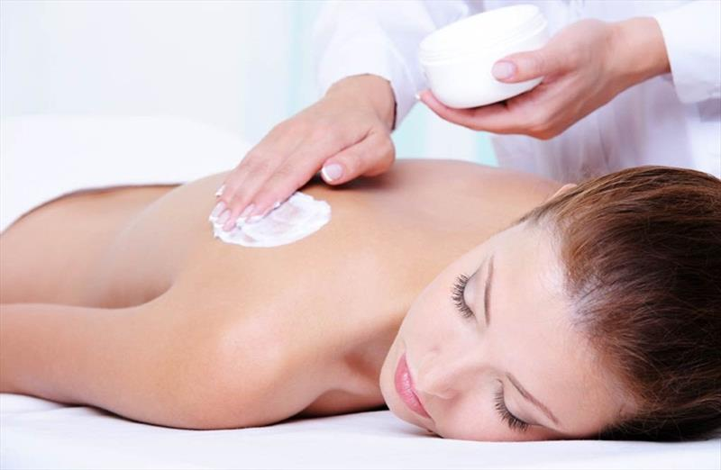

Tắm trắng vĩnh viễn giá bao nhiêu? Có nên chọn dịch vụ giá rẻ?
Sở hữu làn da sáng mịn, đều màu luôn là niềm mong ước của nhiều người. Chính vì vậy, các liệu trình tắm trắng vĩnh viễn ngày càng được quan tâm. Tuy nhiên, một trong những băn khoăn phổ biến nhất là giá tắm trắng vĩnh viễn bao nhiêu và yếu tố nào ảnh hưởng đến chi phí? Bài viết sau sẽ giúp bạn giải đáp một cách chi tiết và thực tế nhất.
Tắm trắng vĩnh viễn là gì?
Tắm trắng vĩnh viễn là phương pháp làm sáng da toàn thân hoặc từng vùng, sử dụng công nghệ hiện đại kết hợp với dưỡng chất đặc trị để cải thiện tông da lâu dài. Khác với các cách làm trắng da tạm thời như dùng kem hoặc mặt nạ tự nhiên, tắm trắng chuyên sâu tác động trực tiếp vào lớp biểu bì và hạ bì của da, thúc đẩy quá trình tái tạo, đồng thời giảm thiểu sắc tố melanin nguyên nhân chính gây sạm da.
Tắm trắng bao nhiêu tiền?
Mức giá tắm trắng vĩnh viễn hiện nay rất đa dạng, thường dao động từ 400.000đ đến hơn 5.000.000đ mỗi buổi, tùy thuộc vào:
Khu vực tắm trắng
Tắm trắng từng vùng (tay, chân, lưng, cổ…): khoảng 300.000đ – 1.200.000đ/lần.
Tắm trắng toàn thân: dao động từ 1.000.000đ – 5.000.000đ/lần hoặc nhiều hơn tùy công nghệ.
Số buổi trong liệu trình
Một liệu trình thường kéo dài từ 4–8 buổi, có nơi kéo dài đến 10 buổi. Tổng chi phí có thể lên đến 10 – 20 triệu đồng hoặc hơn tùy tình trạng da và phương pháp sử dụng.
Công nghệ áp dụng
Giá cả phụ thuộc lớn vào công nghệ được sử dụng. Ví dụ:
Công nghệ nano hoặc phi thuyền hiện đại: giá cao nhưng hiệu quả trắng sáng nhanh.
Phương pháp tắm trắng thảo dược, tự nhiên: giá mềm hơn nhưng hiệu quả chậm và cần thời gian duy
trì.
Tay nghề chuyên viên & cơ sở vật chất
Những cơ sở có đội ngũ chuyên viên kinh nghiệm, máy móc hiện đại, phòng ốc riêng tư, khép kín thường có chi phí cao hơn nhưng mang lại trải nghiệm và kết quả tốt hơn.
Bạn có thể tham khảo thêm mức giá chi tiết tại tắm trắng bao nhiêu tiền để có cái nhìn rõ ràng hơn trước khi quyết định.
Vì sao có sự chênh lệch giá giữa các cơ sở?
Sự chênh lệch giá tắm trắng đến từ nhiều yếu tố như:
- Chất lượng sản phẩm: sử dụng trong quá trình tắm trắng: sản phẩm từ Hàn, Nhật, Pháp... thường giá cao hơn hàng nội địa hoặc không rõ nguồn gốc.
- Công nghệ & thiết bị: Càng hiện đại thì khả năng thẩm thấu và hiệu quả cải thiện da càng tốt, nhưng kéo theo chi phí cũng tăng.
- Liệu trình cá nhân hóa: Tùy vào mức độ sạm da, cơ địa, mục tiêu làm trắng mà bác sĩ hoặc chuyên viên sẽ thiết kế liệu trình riêng biệt, từ đó chi phí cũng khác nhau.
- Chính sách bảo hành và cam kết hiệu quả: Một số nơi có chính sách hoàn tiền hoặc làm lại miễn phí nếu da không trắng như cam kết – đây cũng là lý do khiến giá cao hơn.
Có nên chọn tắm trắng giá rẻ?
Dù chi phí thấp có thể hấp dẫn, nhưng tắm trắng giá rẻ tiềm ẩn nhiều rủi ro như:
- Dùng hóa chất tẩy mạnh làm bào mòn da.
- Gây kích ứng, dị ứng, da dễ bắt nắng, mẩn đỏ hoặc nổi mụn nước.
- Không rõ nguồn gốc sản phẩm, dễ gây viêm nhiễm da nghiêm trọng.
Lời khuyên là nên ưu tiên lựa chọn địa chỉ uy tín, có giấy phép hoạt động, đội ngũ kỹ thuật viên chuyên môn và quy trình rõ ràng. Đây là cách đảm bảo kết quả trắng sáng lâu dài, an toàn cho làn da và sức khỏe tổng thể.
Tắm trắng bao lâu thì thấy hiệu quả?
Tùy vào công nghệ và cơ địa từng người, hiệu quả có thể xuất hiện sau 2–3 buổi đầu, nhưng thường rõ rệt nhất là từ buổi thứ 4 trở đi. Một số người cần đến 6–8 buổi mới đạt được kết quả như mong muốn. Sau đó, cần kết hợp chăm sóc da đều đặn để duy trì hiệu quả lâu dài.
Sau tắm trắng có cần chăm sóc đặc biệt?
Đây là giai đoạn cực kỳ quan trọng để duy trì hiệu quả làm trắng. Một số lưu ý:
- Tránh tiếp xúc ánh nắng trực tiếp trong 7 ngày đầu tiên.
- Dưỡng ẩm da mỗi ngày, dùng kem chống nắng có chỉ số SPF cao.
- Không dùng sản phẩm tẩy tế bào chết hoặc sữa tắm có axit trong 1 tuần đầu.
- Uống nhiều nước, ăn rau củ quả giàu vitamin A, C, E để nuôi dưỡng da từ bên trong.
Kết luận
Chi phí tắm trắng vĩnh viễn phụ thuộc vào nhiều yếu tố như công nghệ, vùng da tắm trắng, số buổi trong liệu trình, chất lượng sản phẩm và uy tín của cơ sở thực hiện. Thay vì chỉ quan tâm đến giá, bạn nên xem xét toàn diện về hiệu quả, độ an toàn và sự uy tín của nơi cung cấp dịch vụ.
Để hiểu rõ hơn về các công nghệ hiện đại và lựa chọn phù hợp với làn da của bạn, hãy tham khảo thêm tại https://lgclinic.vn/tam-trang-da nơi cung cấp nhiều thông tin hữu ích về dịch vụ và công nghệ tắm trắng hiện nay.
Tài liệu tham khảo:
FDA – Skin Products Containing Mercury and/or Hydroquinone